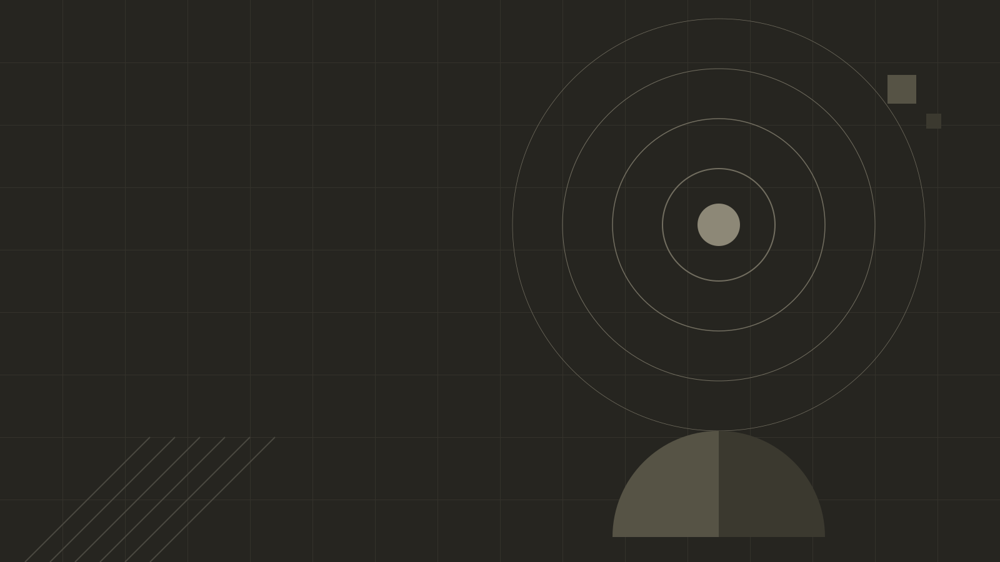
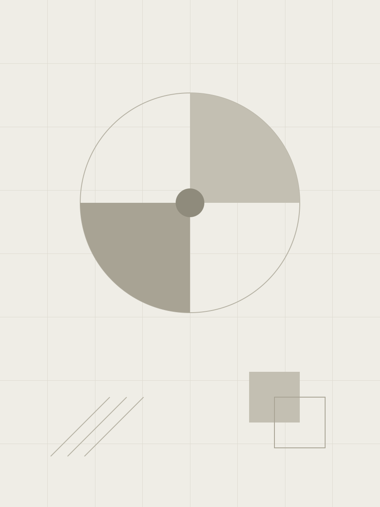
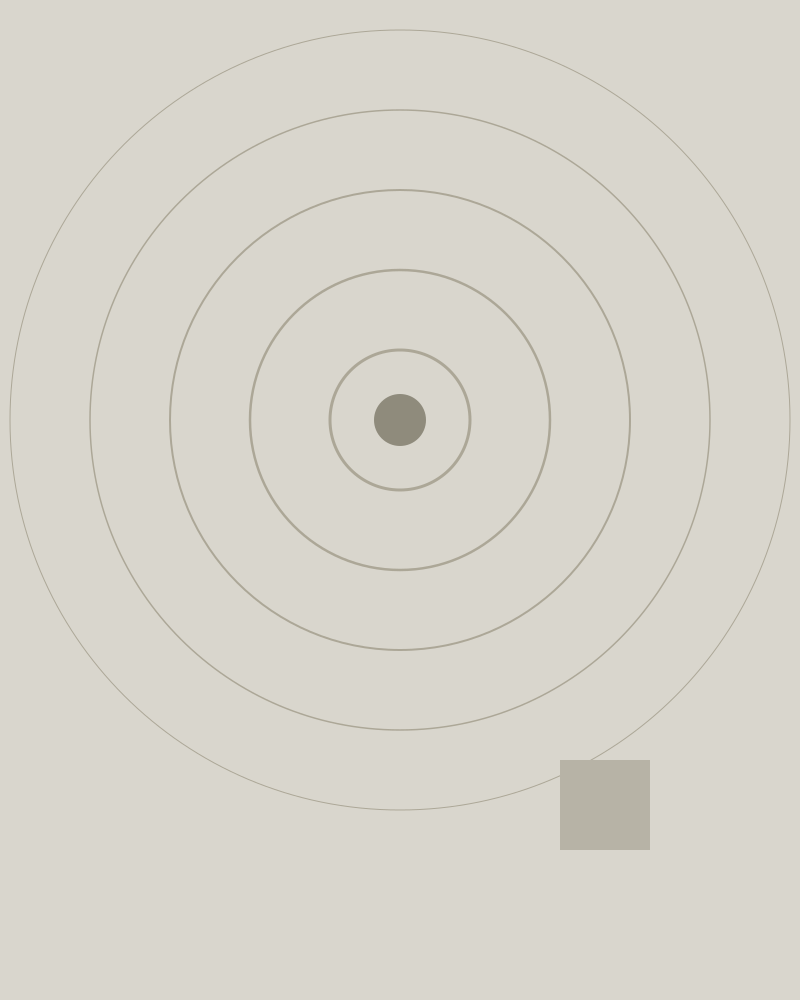

This is the template every brand deck starts from — and a live tour of the component vocabulary. Every slide teaches the component it is built with: keep the structure, replace the copy, and let a brand's tokens.css re-dress the whole thing.
1 · Extract the design system straight off the company's website — exact colors, fonts, logo, iconography. 2 · Skin: encode it as a tokens.css over the brand-neutral engine in shared/. 3 · Author slides from the component vocabulary this deck demonstrates — no new CSS. 4 · Build to one self-contained HTML that opens offline and prints to PDF. 5 · Iterate by visual spot-check in the browser.
The .menu table is the deck's register voice — agendas, tiers, comparisons. Header cells speak tracked uppercase in the mono face; tr.hl tints the row that matters. Here, the section up next.
| Section | What it demonstrates | Key classes |
|---|---|---|
| Cover & titles | Photo-hero cover, grid-textured dividers | .slide.cover · .has-grid |
| Numbers | Stat tiles, the dark banner, the TBD marker | .stats · .banner · .tbd |
| Cards | The card family and its accent variants | .card · .acc–.acc-4 · .feature |
| Media | Splits and accent-washed photo cards | .split · .pcard |
| Icons & lists | Feature rows, category tiles, clean lists | .feat · .cats · ul.clean |
| Sequence | Roadmap lanes and roster columns | .road · .who |
| Sharing | Internal-only slides and the standalone build | data-internal · build.mjs |
Stat tiles hold your load-bearing numbers: a big display-font value over a one-line label. When a number isn't confirmed yet, it wears the TBD marker — loud on purpose, so a draft can never pass for final.
Top border and kicker take --accent. A .ck kicker, a display-font h3, one short paragraph — that is the whole anatomy.
Use the support accents to sort cards into families — themes, phases, options — not to decorate.
Each variant re-keys the border and kicker; the body type stays ink so the grid reads as one system.
Four accents is the ceiling. If a slide needs a fifth category, the slide needs a rethink.
The unaccented card is for supporting matter that shouldn't compete.
The .emp line sits pinned to the card's foot — a caveat, a source, a date.
The one card allowed a tinted background — --color-primary-light with a primary border. At most one per slide.

The split pairs one image with the case it supports. The media box is a bordered, rounded frame; the content column centers itself vertically.
assets/split.svg is a placeholder — swap in a photo from the brand's own site and keep the alt text honest.
Each .pcard variant washes its image with one of the skin's accents, darkening to near-opaque behind the caption — so white type never gambles on what the photo is doing.
The gradient runs --accent-rgb down into --accent-deep-rgb.

Same geometry, keyed to --accent-2-rgb. Use a trio to compare themes.
--accent-3-rgb, falling to ink at the base. Plain .pcard washes to pure ink.
The .road grid puts a tracked-uppercase timeframe over a heading and a short list, three lanes under one rule. It happens to be the workflow for this very repo.
The builder inlines everything — styles, script, fonts, images — into a single HTML file you can attach to an email. The highlighted row is the file most people should receive.
| Output | What it is | Send it to |
|---|---|---|
| index.html | The working copy — needs the repo beside it (shared/ engine, assets/). | Nobody. It's your editing surface. |
| starter-standalone.html | One self-contained file, every reference inlined. Opens offline, prints to PDF. | The client, the team, anyone. |
| starter-public.html | The standalone, minus every slide tagged data-internal. | Wider circulation. |
Generated files are git-ignored. Rebuild them any time: node build.mjs starter, plus --public for the trimmed cut.
The .who entry is a name over a role — built for teams and contributors, equally good as a manifest. Top row travels with the deck; bottom row is the shared machinery.
Add the data-internal attribute to a slide's <section> tag and the public build drops the whole slide — markup, images, speaker candor and all.
Build both outputs and open them side by side: the standalone shows all 14 slides, the public build 13 — and no other difference.
Run the extractor against a company website and this same deck re-renders in their colors, their type, their logo. Keep the structure, replace the copy, and wrap anything you can't verify in a TBD marker. The skin changes; the discipline doesn't.
Every slide you just read was shared/deck.css wearing this deck's neutral tokens.css. Replace the tokens and the same fourteen slides speak another brand's language — that is the whole trick.